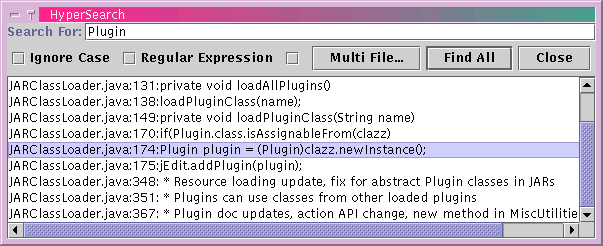

The HyperSearch feature lists all lines in a buffer (or a set of buffers, if multiple file search is enabled) that contain a specified string.
Search>HyperSearch (keyboard equivalent: Control-H) displays the HyperSearch dialog box.
Search>HyperSearch For Selection (keyboard equivalent: Control-E Control-H) displays the HyperSearch dialog box and searches for all occurrences of the currently selected text.
The desired search string can be entered in the Search for: field. This field stores previously entered strings; see Appendix B.
If the Regexp check box is selected, regular expressions can be used to match inexact sequences of text; see Appendix E.
If the Ignore Case check box is selected, the search will be case insensitive; entering "Hello" in the search field will locate "hello", "HELLO", and "HeLlO"
If the Multi File check box is selected, multi file searching will be enabled. For more information about multi-file searching, see the section called Searching in Multiple Files.
Clicking Start or pressing Enter will begin the search.
While the search is in progress, clicking Stop will abort the search.
Once a search has been performed, the results list displays all matching lines. Clicking on a line will open the buffer where it was found and move the caret to the specified line.
Figure 7-2. The HyperSearch dialog box
